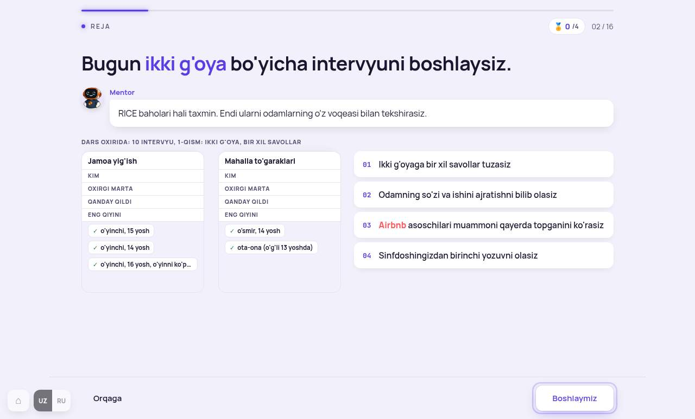
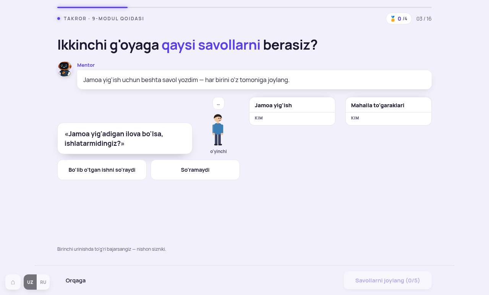
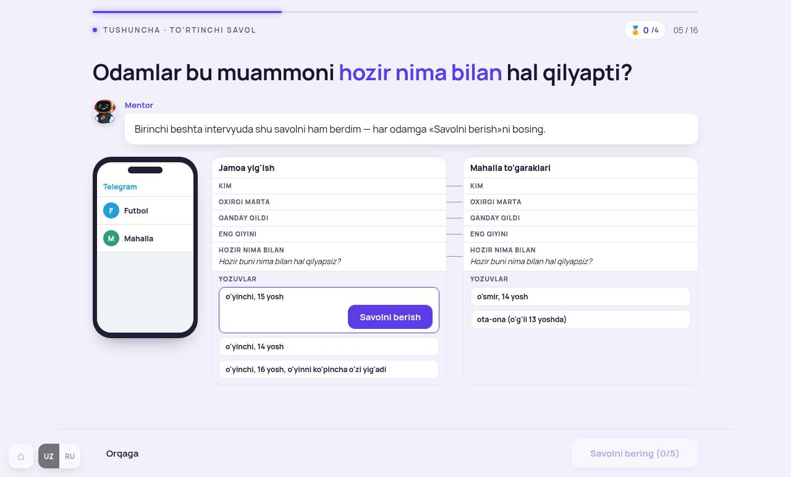
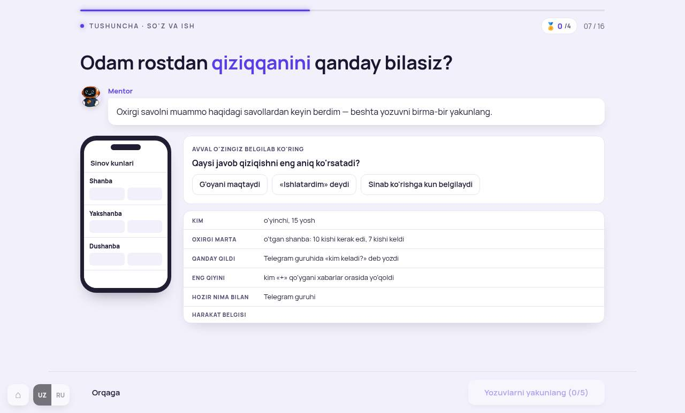
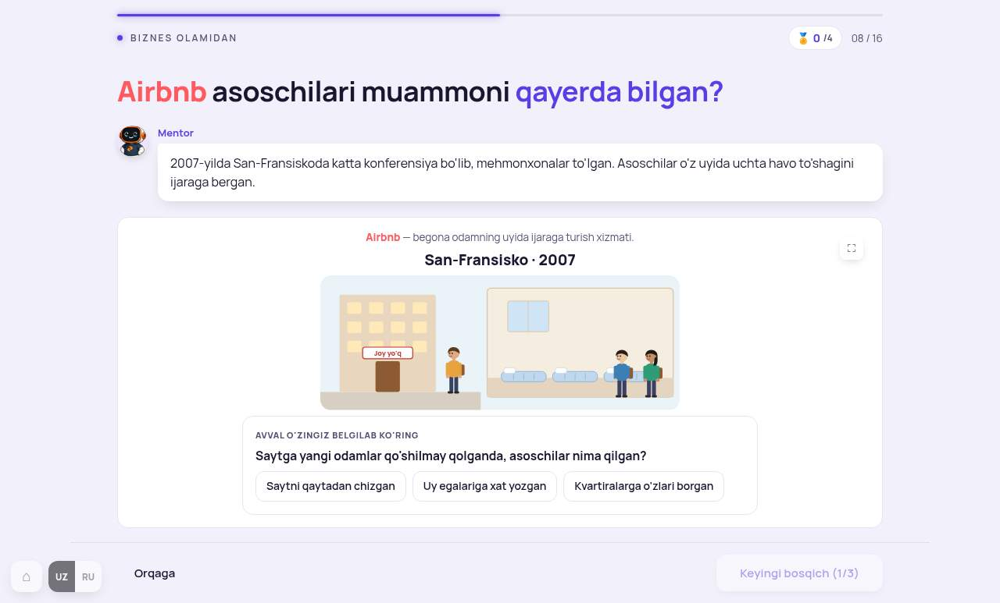
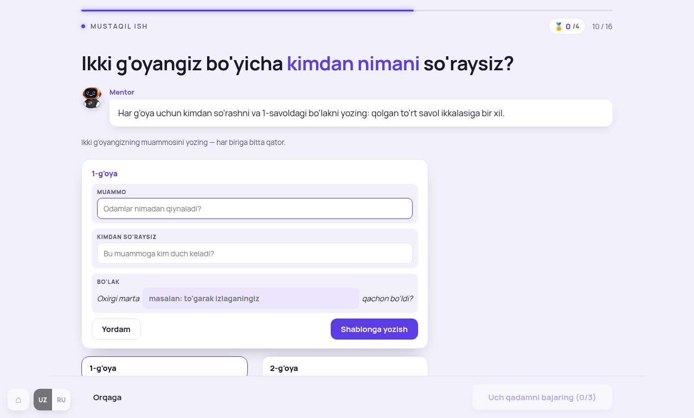
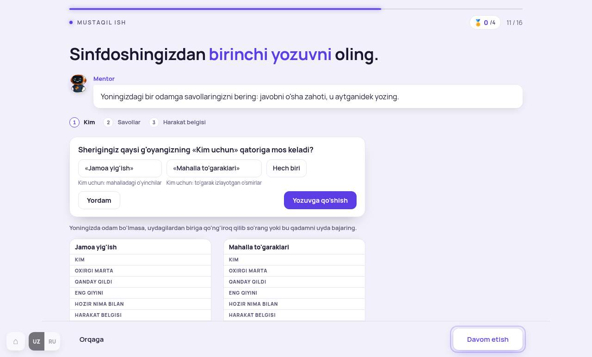
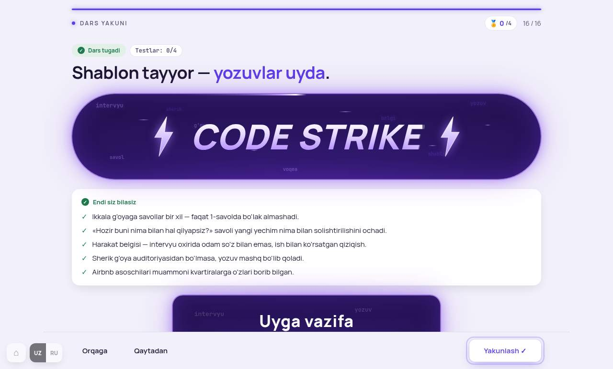

Tartib 2-darsdagidek: har bandda hozirgi surat, tashxis, taklif-namuna va A/B. Kod tegilmagan. Tanlovni raqam bilan ayting yoki «hammasi A».
Mentorning ikki g'oyasi kartasi (Muammo · Kim uchun · RICE) 2-dars natijasining davomi, so'rovnoma variantlari ikkita g'oya. Toza, tegilmaydi.

Tashxis. «10 intervyu, 1-qism» o'quvchiga hech narsa demaydi. Skelet (ikki ustun, qator nomlari, ✓ odamlar) tushunarli, qoladi. 03-band Airbnb keysi 205 ga qarab yangilanadi.

Tashxis. Bu takror-ekran, lekin qoida bir qator bilan ham aytilmagan — 9-Modulni unutgan o'quvchi taxmin qiladi. Elementlar bog'lanmagan: savol, avatar, ustunlar uch alohida narsa. Avatar bezak.
9-Modul qoidasi: bo'lib o'tgan ishni so'rang. «Ishlatarmidingiz?» — taxmin, javob emas.

Tashxis. Ekranning maqsadi bitta: to'rtinchi savol odamlar hozir nima ishlatishini ochadi. Buning uchun shablonning 6 qatori ham, telefon ham kerak emas. Besh marta bir xil bosish ma'no qo'shmaydi.

Tashxis. Darsning asosiy ko'nikmasi shu yerda: so'zni ishdan ajratish. Hozir o'quvchi Mentor yozuvini «yakunlaydi» — qaror qilmaydi. Taxmin va yozuv birga chiqadi (2-darsda tuzatilgan qolip).
5 odamdan 4 tasi kun belgiladi. Bu harakat belgisi: odam so'z bilan emas, ish bilan ko'rsatdi.

Tashxis. Keys banki K1–K19 da intervyu mavzusiga faqat K4 Airbnb mos. Qoida: bosh-keys modul ichida takrorlanmaydi. Yechim: kompaniya o'sha, lekin bob boshqa.
2009-yilda sayt o'smay qoldi. Asoschilar Nyu-Yorkka borib, uy egalarining o'zi bilan gaplashdi va kvartiralarni o'zlari suratga oldi — e'lonlar yomon suratli edi. Shundan keyin band qilishlar oshdi.
Avval o'zingiz belgilab ko'ring Asoschilar muammoni qanday bilgan?
Tashxis. Muammo va Kim uchun 1-darsda yozilgan, ikki g'oya 2-darsda tanlangan — hammasi saqlangan. Bu yerda yangi narsa bitta: «Oxirgi marta … qachon bo'ldi?» ga bo'lak. 2-darsdagi kabi (213.6): tayyor narsa yozilmaydi.

Tashxis. Qadamlar to'g'ri (bittadan). Lekin javob yozilayotganda ikki bo'sh ustun pastda osilib turadi, yozuv qaysi ustunga tushishi ko'rinmaydi. Yakka rejim yo'rig'i kartadan tashqarida.
Yoningizda odam bo'lmasa — uydagilardan biriga qo'ng'iroq qiling yoki bu qadamni uyda bajaring.
